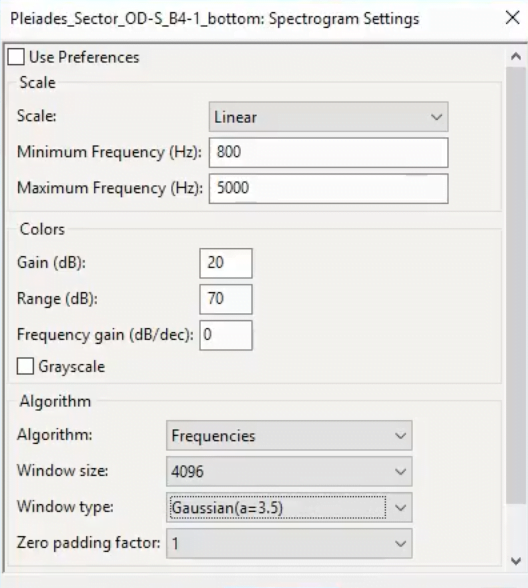
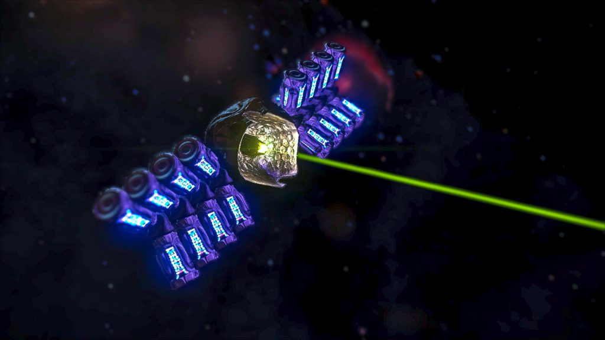
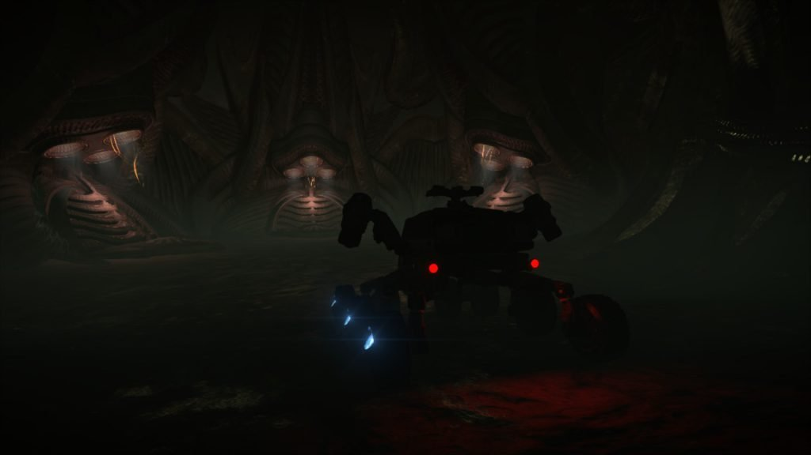

The Thargoid Link is a Thargoid object that can be found in Thargoid Structure Surface Sites (Non Destroyed ones) and they bear great similarities to the Thargoid Probe and the Thargoid Sensor.
They can be found within any structure with more than 2 Leviathans in their own chamber. There will be 3 Links in what appears to be 3 pod-like structures. The Links will drop down from the ceiling if you have a Thargoid Sensor, or Probe in the cargo bay of your SRV. The Link is necessary in order to activate the Thargoid Device.
Thargoid Links can also be used to locate new Thargoid sites. After a Thargoid Link has been jettisoned in space you’ll be able to open one of the previous scanned messages in your notifications tab acquired from scanning the Thargoid Device, the Link will react to each signal and produce an audio code that when decoded gives the name of a system when you travel to that system and drop the Thargoid Link into space again and play the message again, the Link will then point in the direction of a new Site by releasing a beam in the corresponding direction. Numerous Thargoid sites have been found this way. The way people found out was through extensive mathematics, more can be read about the process at this forum post
For an excellent overview of how to decode the narrow-band audio check out this guide from Redden Alt-Mer:
To decode the message to a location there is an online tool, though it should be noted that the messages sometimes have errors that require more extensive processing.
If you just want the spectrogram settings for Audacity:

Audacity Spectrograph Settings for decoding Thargoid Probe transmissions

Thargoid Link firing beam.

The 3 pods that hold the Thargoid Links
Thargoid Links have so far only been found at Thargoid Impact Sites that have access to the central room (sites with more than 2 Leviathans), and the additional sub-rooms that house the “TL dispensers”.
Some of these locations are listed in the Table below – A full list can be found here
Note: This sheet is from 2017, as such it is considered out of date, is missing a few sites and the site coordinates are only valid for 3.8 / Legacy. A new updated sheet is currently being worked on.
| HIP 14909 | 2 A | -26.4561 // -27.4742 |
| MEL 22 SECTOR ZU-P C5-1 | 4 A | -63.5266 // 8.0136 |
| MEL 22 SECTOR NX-U D2-27 | 5 A | -39.7932 // -56.2540 |
| MEL 22 SECTOR NX-U D2-31 | 3 A | -51.7229 // -110.0287 |
| MEL 22 SECTOR YU-F B11-1 | AB 5 A | -52.0061 // -5.6793 |
| MEL 22 SECTOR UT-R C4-4 | 1 A | 16.2444 // 25.5284 |